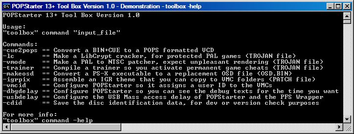

Toolbox Commands
📎 Recovered from the ShaolinAssassin wiki · snapshot 20170907050300
Toolbox commands
[ToolBox Version 1.0]
List of Toolbox commands :
| Command | Description |
| -cue2pops | Convert a BIN+CUE to a POPS formatted VCD |
| -lc | Make a LibCrypt cracker, for protected PAL games (TROJAN file) |
| -vmode | Make a PAL to NTSC patcher, expect unpleasant rendering (TROJAN file) |
| -trainer | Compile a trainer so you activate permanent game cheats (TROJAN file) |
| -makeosd | Convert a PS-X executable to a replacement OSD file (OSD.BIN) |
| -igrpix | Assemble an IGR theme that you can copy to VMC folders (PATCH file) |
| -vmcid | Configure POPStarter so it assigns a user ID to the VMCs |
| -dbgdelay | Configure POPStarter so you can see the debug texts for the time you want |
| -usbdelay | Configure the USB Mass access delay of POPStarter and the PFS Wrapper |
| -cdid | Save the disc identification data, for dev or version check purposes |
Details :
-cue2pops :
- Tool name (version) : CUE2POPS Lite (base v2.1 beta 2)
Hello! I convert BIN+CUE disc images to the POPS format.
The BIN has to be a raw MODE2/2352 dump.
The CUE has to be a standard ASCII cuesheet.
Splitted dumps (with separate tracks) are not supported.
High density dumps (aka merged/combined discs) are supported.
Old extra commands gap++, gap--, vmode, trainer, whatever, no longer exist.
- Usage :
"toolbox.exe" -cue2pops "input_file" "output_file"
OR
"toolbox.exe" -cue2pops "input_file"
- Examples :
toolbox -cue2pops "K:\toolbox\AMERICAN_POOL.cue" "L:\POPS\AMERICAN_POOL.VCD"
OR
toolbox -cue2pops "K:\toolbox\AMERICAN_POOL.cue"
- Notes :
Input_file must be an ASCII cuesheet (CUE) which points to a Mode 2 Form 1 CD-ROM image
Output_file is the filename of the VCD you want to create (optional).
-lc :
- Tool name (version) : LC Crack Trojan Maker
Hello! I make TROJANs that crack your LibCrypt protected games.
The crack is applied to the POPS memory, so your VCD remains untouched.
1. Run your game in pSX/ePSXe/PCSX/Xebra (must have a genuine SBI or SUB)
2. Do a savestate as soon as it has gone past the LibCrypt thread
3. Decompress the savestate if it's compressed
- Usage : :
"toolbox.exe" -lc "input_file"
- Notes :
Input_file can be :
. a pSX Quicksave (PSV).
. a Xebra Running Image
. a PCSX Save State v3 (Uncompressed)
. a PCSX Save State v4 (Uncompressed)
. an ePSXe Save State (Uncompressed)
“(Uncompressed)” means that you must decompress it manually, using a gzip archiver such as 7-Zip…
-vmode :
- Tool name (version) : PAL2NTSC Trojan Maker v1.0
Hello! I make TROJANs that patch your games VMODE to NTSC.
The patch is applied to the POPS memory, so your VCD remains untouched.
Results are as horrible as what you got with the vmode function of the old CUE2POPS, because the display is not resized nor cropped to the NTSC resolution.
Games with multiple EXEs/routines are not supported.
- Usage :
"toolbox.exe" -vmode "input_file"
- Example :
toolbox -vmode "K:\toolbox\SLUS_014.88"
- Notes :
Input_file can be :
. a pSX Quicksave (PSV)
. an ePSXe Save State (Uncompressed)
. a PCSX Save State v3 (Uncompressed)
. a PCSX Save State v4 (Uncompressed)
. a Xebra Running Image
. a PS-X Executable
. a PS-X RAM Dump
. a PS2 Kernel Memory Dump (POPS)
. a PS2 User Memory Dump (POPS)
“(Uncompressed)” means that you must decompress it manually, using a gzip archiver such as 7-Zip…
-trainer :
- Tool name (version) : Game Trainer Maker Version 1.0
Hello! I compile trainers (per-game cheat plugins), from a text file that contains PS1 GameShark/Action Replay codes
for your game.
- Usage :
"toolbox.exe" -trainer "your codelist.txt"
- Example :
toolbox -trainer "K:\toolbox\2Xtreme.txt"
- Notes :
Syntax of the codelist:
. Each line of code you want to “activate” must start with the character $
. There must be a whitespace between the address and the value in your code(s)
. The supported code types are 30, 50, 80 and D0
. Anything that doesn’t match the above criteria’s will be ignored on compile
Example of a codelist:
Unlock All Tracks
$80076398 3F3F
Refresh Skill Bonus (Press Select)
$D00B69F2 0100
$80086BB8 0200
Stop Timer
$50000202 3BF1
$8005D468 270F
-makeosd :
- Tool name (version) : PS-X executable to OSD.BIN converter v1.0
Hello! I convert PS-X EXEs to OSD.BIN files
The maximum allowed size of the PS-X EXE is 317600 bytes.
Note that OSD.BIN files are loaded by POPStarter with the built-in BIOS.
OSD.BIN can't be loaded when a BIOS.BIN is used.
- Usage :
"toolbox.exe" -makeosd "PSX.EXE"
-igrpix :
- Tool name (version) : IGR Texture Replacer Version 1.0
Hello! I build patches that replace the IGR textures by the ones of your choice.
Then you can copy the patches in the VMC directories you want...
In other words, I assemble per-game IGR "themes" with your TIM2 pictures.
- Usage :
"toolbox.exe" -igrpix "background.tm2" "no_button.tm2" "yes_button.tm2"
- Example :
toolbox -igrpix "K:\toolbox\IGR_BG.TM2" "K:\toolbox\IGR_NO.TM2" "K:\toolbox\IGR_YES.TM2"
-vmcid :
- Tool name (version) : User ID assignment util for making POPS save in individual VMC couples
Hello! I configure the POPStarter ELF/KELF to allow you and yours save on separate VMCs.
- Usage :
"toolbox.exe" -vmcid "POPStarter.elf"
- Example :
toolbox -vmcid "K:\toolbox\XX.AMERICAN_POOL.ELF"
-dbgdelay :
- Tool name (version) : POPStarter debug pages delay config tool that has a long and stupid name
Hello! I configure the POPStarter ELF/KELF so you can choose how long to print debug stuff.
- Usage :
"toolbox.exe" -dbgdelay "POPStarter.elf"
- Example :
toolbox -dbgdelay "K:\toolbox\XX.AMERICAN_POOL.ELF"
-usbdelay :
- Tool name (version) : USB Access Delay Config Tool v1.0
Hello! I let you set the USB access delay of Delcro's PFS Wrapper v2 and POPStarter.
- Usage :
"toolbox.exe" -usbdelay "POPStarter.elf" "PFS_WRAP.BIN"
- Example :
toolbox -usbdelay "K:\toolbox\XX.AMERICAN_POOL.ELF" "K:\toolbox\PFS_WRAP.BIN"
-cdid :
- Tool name (version) : Game Identification Data Extractor (IdentRip)
Hello! I make disc identification files for the POPStarter development.
These files are required for integrating and activating per-game stuff in POPStarter.
The POPStarter end users don't need 'em, but krHACKen does.
- Usage :
"toolbox.exe" -cdid "input_file"
- Example :
toolbox -cdid "K:\toolbox\AMERICAN_POOL.bin"
- Notes :
Input_file can be :
. a Mode 2 Form 1 CDROM image
. an ASCII cuesheet (CUE) which points to a Mode 2 Form 1 CD-ROM image
. a POPS virtual CD-ROM image (VCD)
POPS2CUE :
It does what its name says : revert back the conversion from .VCD to .BIN+.CUE or (.CUE only) files. See the screenshot for commands.
Images & screenshots
